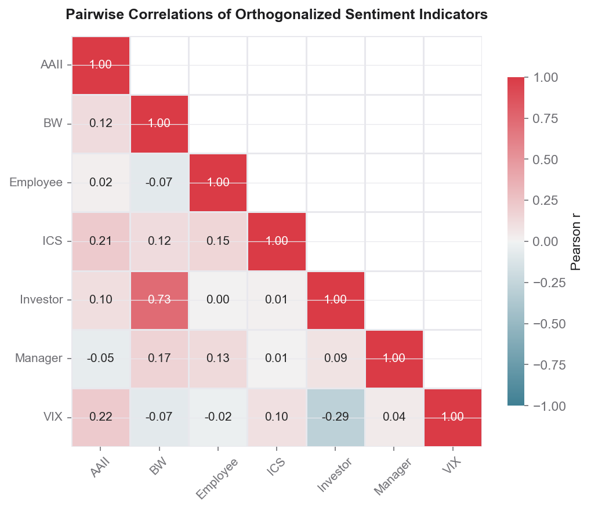
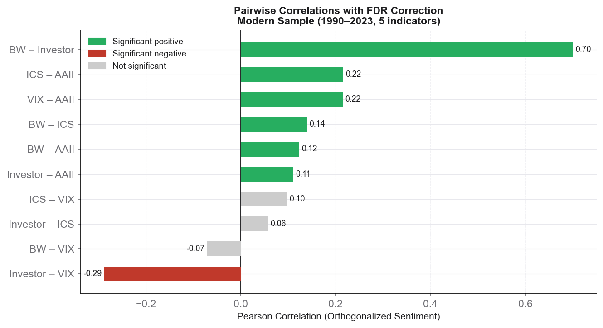
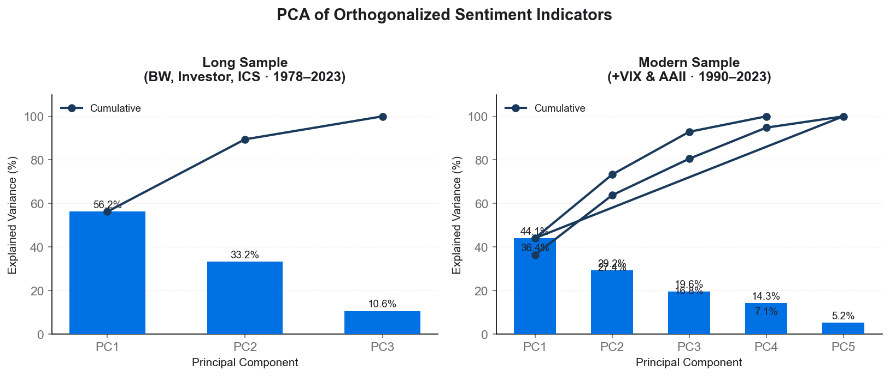
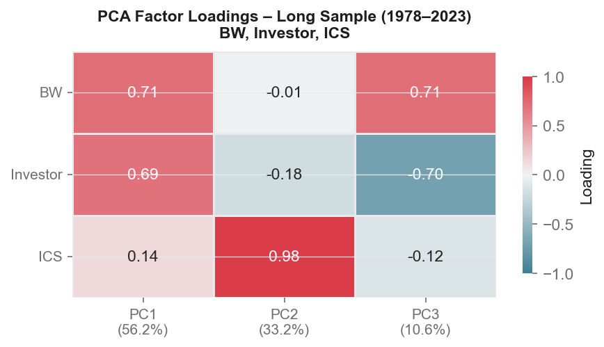
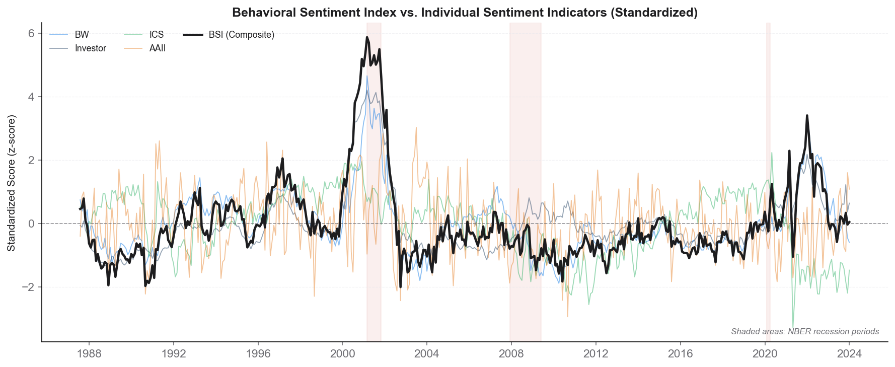
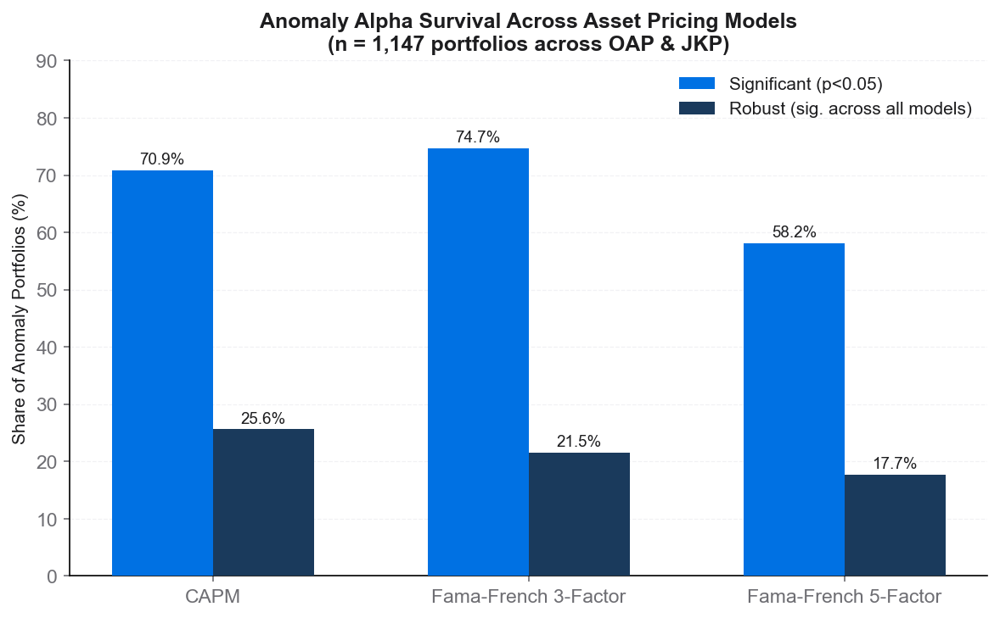

Part I
Sentiment Analysis
Before assessing sentiment's impact on returns, we characterize the structure of the
seven orthogonalized indicators: how correlated are they, how many independent dimensions
do they span, and how do they co-move over time?
1.1 Pairwise Correlations of Orthogonalized Sentiment
After removing the macroeconomic component from each indicator, the correlation matrix reveals
the extent to which the remaining sentiment variation is shared or independent.
BW and Investor share the strongest link (r = 0.73); most other pairs are near zero.

Figure 1.1 Pairwise Pearson correlations of orthogonalized sentiment indicators
(full overlap sample). Colour intensity indicates magnitude; red = positive, blue = negative.
BW–Investor is the dominant pair (r = 0.73); VIX is negatively related to Investor (r = −0.29).
1.2 Significance After FDR Correction (Modern Sample, 1990–2023)
Benjamini-Hochberg correction across all 10 pairwise tests in the modern sample.
Six of ten pairs remain significant at 5% FDR, confirming that several indicators capture
distinct sentiment dimensions.

Figure 1.2 Pairwise correlations with FDR adjustment (Benjamini-Hochberg, 5%).
Green = significantly positive; red = significantly negative; grey = not significant.
Modern sample includes BW, Investor, ICS, VIX, and AAII (1990–2023).
Key Takeaway
BW and Investor sentiment co-move strongly even after macro purification, suggesting they
capture the same underlying behavioral factor. VIX acts as a fear measure and moves inversely
to investor optimism. All other pairs are statistically independent, validating the use of
multiple proxies to capture different behavioral dimensions.
1.3 Principal Component Analysis — Dimensionality of Sentiment
PCA reveals how many independent sentiment dimensions exist across different sample periods.
In the long sample (1978–2023, three indicators), a single component explains over half the
variation. In the modern sample (five indicators), the structure is richer.

Figure 1.3 Scree plots for the Long Sample (BW, Investor, ICS; 1978–2023) and
Modern Sample (adds VIX & AAII; 1990–2023). Bars show individual explained variance;
line shows cumulative variance. Long sample: PC1 alone captures 56.2%.

Figure 1.4 Factor loadings on the first three principal components for the
Long Sample (1978–2023). BW and Investor load similarly and positively on PC1 (0.71, 0.69),
confirming a shared market-sentiment factor. ICS dominates PC2 (0.98).
Key Takeaway
The long-sample PCA shows that BW and Investor sentiment share a dominant common factor (PC1,
56.2% of variance), while ICS represents a distinct consumption-confidence dimension (PC2, 33.2%).
In the modern sample the variance is more evenly spread across components, reflecting the greater
diversity of the full indicator set.
1.4 Behavioral Sentiment Index (BSI) over Time
The BSI aggregates the available orthogonalized indicators into a single composite series.
It captures the major sentiment episodes of the past four decades, including the dot-com
euphoria, the post-GFC pessimism, and the 2020 recovery.

Figure 1.5 Standardized sentiment indicators and the Behavioral Sentiment Index
(BSI, black line) from 1987 to 2023. Shaded areas mark NBER recessions. Individual indicators
are shown at reduced opacity; the BSI is their PC-weighted composite. Positive values indicate
above-average investor optimism.
Part II
Anomaly Alpha Survival
Before testing the sentiment channel, we establish which anomalies generate statistically
significant alpha and which survive the strongest model corrections. Alpha survival is a
necessary condition: only anomalies that genuinely cannot be explained by known risk factors
are candidates for a behavioral sentiment explanation.

Figure 2.1 Share of the 1,147 anomaly portfolios (OAP + JKP) with statistically
significant alpha (p<0.05, light blue) and robust alpha (significant across all three models,
dark blue) under each asset pricing model. FF5 imposes the strictest filter.
CAPM
813 of 1,147 portfolios (71%) generate significant alpha. 294 (26%) survive as robust.
Relatively permissive—the single market factor leaves most anomaly premia intact.
Fama-French 3-Factor
857 of 1,147 portfolios (75%) significant—adding size and value factors actually
reveals more anomalies by controlling for well-known risk exposures.
247 robust (22%).
Fama-French 5-Factor
667 of 1,147 portfolios (58%) significant after adding profitability (RMW) and
investment (CMA). 203 robust (18%)—the strictest filter across the three models.
Key Takeaway
A substantial share of equity anomalies persist even under the most comprehensive
risk adjustment available. The 18% that survive all three models simultaneously
represent the anomalies most likely driven by behavioral or structural factors
beyond standard risk premia—making them the prime candidates for a sentiment explanation.
Part III
Sentiment-Conditional Anomaly Returns
The central test: do robust anomalies earn higher benchmark-adjusted returns in high-sentiment
periods than in low-sentiment periods? Results are shown for OAP portfolios using the
strictest filter (robust across all three models) under the CAPM alpha as the benchmark-adjusted return.

Figure 3.1 Left: High-minus-Low sentiment alpha spread (monthly %) for each
indicator, OAP robust anomalies, CAPM alpha. Right: Mean alpha in high (blue) vs. low (red)
sentiment terciles. Green bars indicate positive spread (higher returns in high sentiment);
red bars indicate the opposite.
Market-Based Sentiment Drives Positive Spreads
The Behavioral Sentiment Index (BSI) generates the largest High-minus-Low spread
at +0.98% per month under CAPM (t-stat on High = 2.93).
Baker-Wurgler follows at +0.86% per month (t-stat = 3.86)—the most
statistically significant single indicator. Investor sentiment yields +0.74% per month.
Corporate Sentiment Shows the Opposite Pattern
Manager sentiment (Zhou et al.) yields a negative spread of −0.17% per month
and Employee sentiment −0.34% per month. When corporate insiders are optimistic,
anomaly returns moderate—potentially because insider optimism correlates with overvaluation
and subsequent mean-reversion, reducing the spread available to long-short strategies.
VIX: Fear Index Reverses the Direction
VIX is an inverse sentiment proxy (high VIX = high fear). Its spread is −0.22% per month,
consistent with the market-based results: periods classified as "high sentiment" by VIX
correspond to low-fear (low VIX) environments, which are associated with higher
anomaly returns—mirroring the BW and Investor findings.
Summary Table — OAP Robust Anomalies (CAPM Alpha)
| Sentiment Indicator |
Mean Alpha — High Sentiment (%/mo) |
Mean Alpha — Low Sentiment (%/mo) |
High − Low Spread (%/mo) |
t-stat (High) |
Direction |
| BSI (Composite) |
+0.539 |
−0.441 |
+0.980 |
2.93 |
Positive ↑ |
| Baker-Wurgler |
+0.519 |
−0.345 |
+0.864 |
3.86 |
Positive ↑ |
| Investor (Zhou) |
+0.457 |
−0.283 |
+0.739 |
2.92 |
Positive ↑ |
| ICS (Michigan) |
+0.345 |
−0.079 |
+0.424 |
2.23 |
Positive ↑ |
| AAII Bull-Bear |
+0.034 |
+0.061 |
−0.027 |
0.20 |
Neutral ↔ |
| VIX (inverse) |
−0.085 |
+0.132 |
−0.216 |
−0.65 |
Negative ↓ |
| Manager (Zhou) |
−0.554 |
−0.385 |
−0.169 |
−1.91 |
Negative ↓ |
| Employee (Zhou) |
−0.634 |
−0.291 |
−0.342 |
−2.15 |
Negative ↓ |
OAP portfolios robust across CAPM, FF3, and FF5. Tercile split on orthogonalized
sentiment. t-statistics are Newey-West (3 lags). Monthly data.